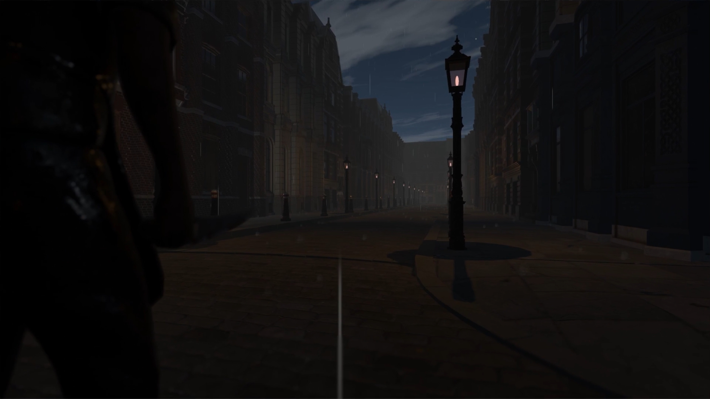

Leather Apron
3rd Person Puzzle Adventure

3rd Person Puzzle Adventure
Check Out This Project
The year is 1891. William Scott is the greatest detective in all of England. After a case of a killer who strikes in the dark went cold over a year ago, rumors spread that the madman might strike again. It’s up to Detective Scott to solve this series of murders and unmask the killer once and for all.
The player is faced with murders to investigate. In order to find the culprit, the examination of the bodies present on crime scenes and all the items surrounding them will be crucial. Said examination can go from simply collecting items and using them somewhere else to analyzing them and finding clues right on them (this includes mini-games present on them as well). The use of certain tools will also prove to be beneficial while solving puzzles (using a magnifying glass to better inspect an object e.g.).
A list of suspects will also be present as an UI toggle (mostly as seen in L.A. Noire) in order to interrogate them later. The ability to scale buildings in order to search surroundings easier will present a whole new perspective to the entire map the player will be able to explore.